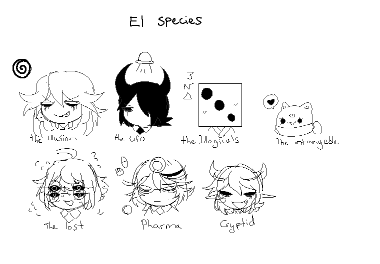

GO BACK
EL species
Illusions
`

Illusions
- All Illusions are hyperfeminine from birth and a significant portion turn masculine later in life
- They are the most tallest species to ever exist compared to every other species in the el realm , in most other realms they are the tallest if we exclude the giants from the eth realm
- A significant illusion trait is that their always based on a type of an illusion and its also related their power(paradoxes, pandoras box, Mandela effect, butterfly effects etc)
- Illusions don’t have irises and their eyes are either blank white (most illusions) but a mutation can take place where they have grey eyes (case with hankovich and Bermuda)
- Illusions can go into a frenzy when el blood is fed to them, turning their eyes to a color with irises on a killing spree
- Illusions by default are natural hedonists
`
- Aliens are by height quite shorter than the average realm species but their very tactical and are the brains of many things.
- Their strength level is quite medium and can vary depending on the situation
- Their skin-color Is bright, all of the aliens have different types of antennas and being a higher up gives them horns.
- You can ofc recognize an alien with their sharp ears and and their different bright color skin.
- Most aliens live together in groups, compared to illusions that are more induviallistic, allot more of them are tactical and are responsible for for most of the tech in the el realm
- Aliens have minispaceships that they use, thay function basically as human cars, their not that developed to the extent to that their able to travel realms
- Aliens barely have any weight, the average human is taller and can pick them up eay but their not as strong